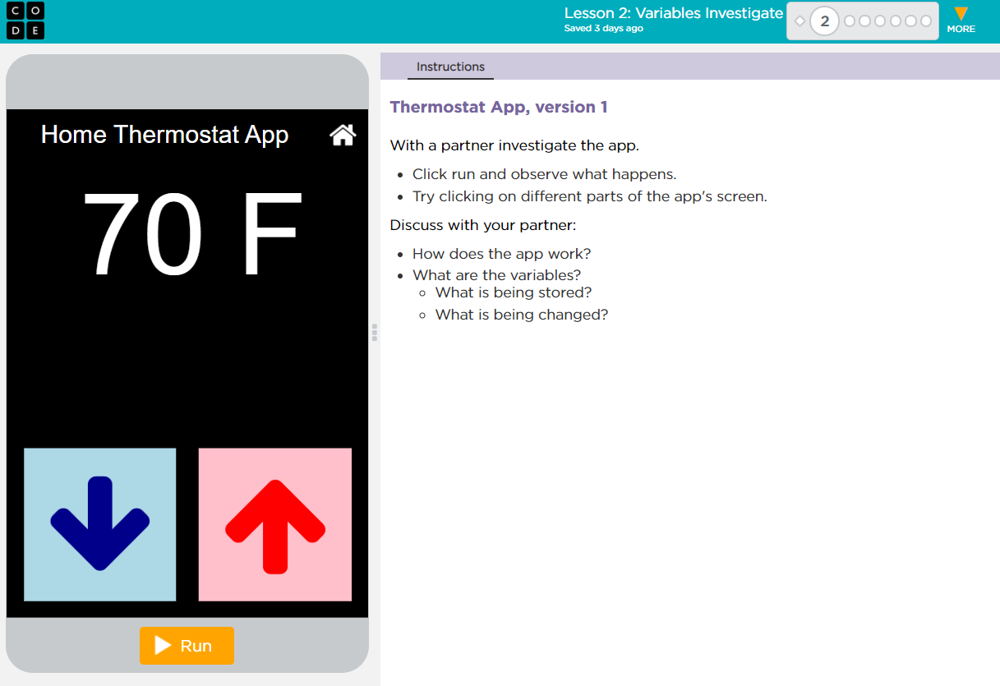
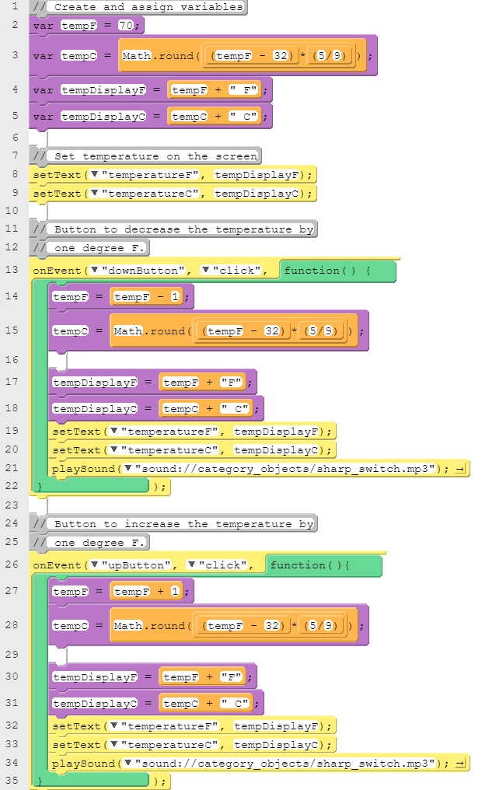
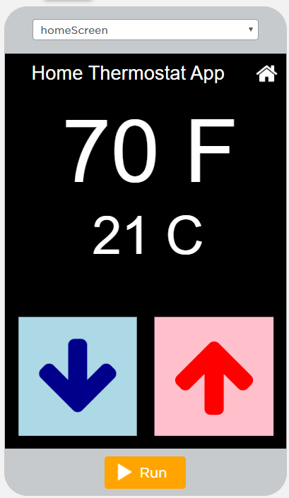
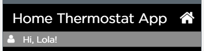
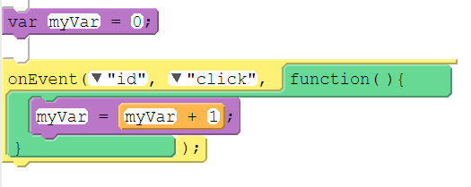
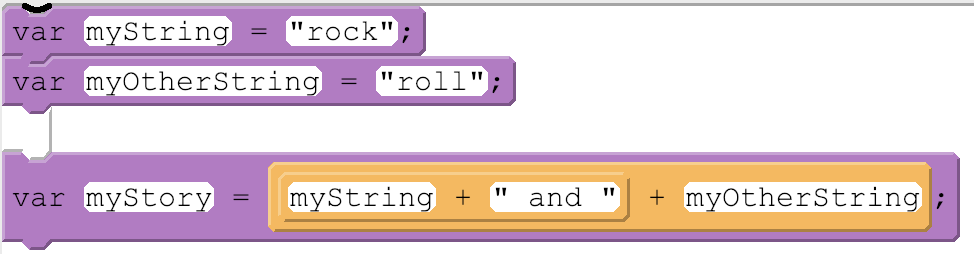

Last lesson we traced variables by hand. Today we will investigate working apps on Code.org to see how real programs use variables to store, update, and display information.
What does a variable do?
Answer in your own words. Think about what you did with the Memory Trace in the last lesson.
Step 1Open Lesson 4.2 on Code.org.
Step 2Open your Investigation Log on Buzz. You will record your predictions and explanations there as we work through each level.

Run the app and click on different parts of the screen to see what happens.
Then predict what information is being stored in variables. What is being stored, and what is being changed?
Write your predictions in your Investigation Log.
Step 1Your teacher will assign you to Section 1 or Section 2 of the code.
Step 2Move to dot 2 on Code.org.
Step 3Read the code for your assigned section and make sure you understand how it works. Check your predictions from Level 1: which variables did you guess correctly?
Step 4Make a group with partners who investigated the other section. Carefully explain how your section works line by line, so your partners understand it without reading it themselves.
As you explain, read each assignment the same way we did in the last lesson. For example, tempF = tempF + 1 reads as “tempF gets the value in tempF plus 1.”
A watcher shows the current value of a variable while your app runs.
In the Watch panel at the bottom right, type a variable name like tempF and click +.
Run the app and click the buttons. Watch the value change each time the variable gets a new value.
Step 1Modify the code so the temperature changes by 2 degrees when the up and down arrows are clicked.
Step 2Check your work: add a watcher for the temperature variable and run the app. Each click should change the watched value by exactly 2.

Look through the code. A new variable, tempC, now stores the temperature in Celsius.
Give your best answer: how do you think Math.round works? Check lines 3, 15, and 28.
Math.round takes a number and gives back the nearest whole number. When tempF is 70, the expression evaluates to 21.11…, so tempC gets 21.

Step 1Move to dot 4 on Code.org. Run the app and discuss what changed from the last version.
Step 2Try deleting just the Math.round in lines 3, 15, and 28. What happens? Then add it back in.
Step 3Modify the code so that no space displays between the temperature and the unit, so the screen shows 70F and 21C.
Step 1Move to dot 5 on Code.org. Run the app and look for what this version adds to the screen.
Step 2Predict what new information this version stores in variables. Which of those values are strings, and which are numbers?
Step 3Write your predictions in your Investigation Log before you look at the code.
Step 1Move to dot 6 on Code.org.
Step 2Read the code and discuss with your partner what has changed and what has stayed the same.
Step 3Discuss as a class: how does getText() work?
getText("nameInput") looks up the screen element with that id and gives back the text it holds right now, as a string. We can store that string in a variable like userName.
Step 4Modify the code: use string concatenation to add an exclamation point "!" to the end of the string stored in userName. Concatenation joins two strings into one with the + operator. When you are done, the screen should display:

Programmers run into the same kinds of problems over and over, such as counting clicks or building a message out of smaller pieces. A code pattern is a common, reusable way of solving one of those problems.
You have already used patterns today without naming them. The thermostat buttons updated a variable with each click, and the display joined a number and a string to build what appeared on the screen.
Once you can recognize a pattern, you can reuse it in your own apps instead of solving the same problem from scratch. For each pattern, we will record its name, its block code, and its text code.

Block mode
var myVar = 0;
onEvent("id", "click", function() {
myVar = myVar + 1;
});The variable is created once, outside the event, so it keeps its value between clicks. Each click, myVar gets its current value plus 1. The thermostat buttons used this same pattern.

Block mode
var myString = "rock";
var myOtherString = "roll";
var myStory = myString +
" and " + myOtherString;The + operator joins strings together. Look up each variable’s current value, then join them in order:
What can be stored in a variable?
Why is using a meaningful name for the variable important?
A reference to a value (or a value that results from evaluating an expression) that can be used repeatedly throughout a program.